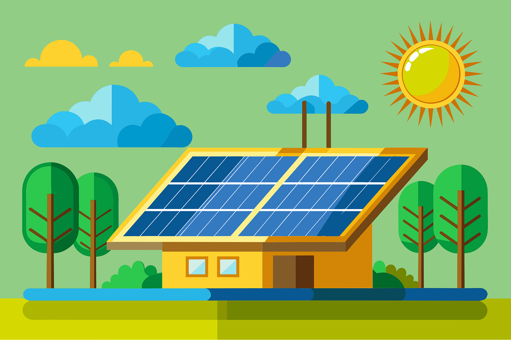
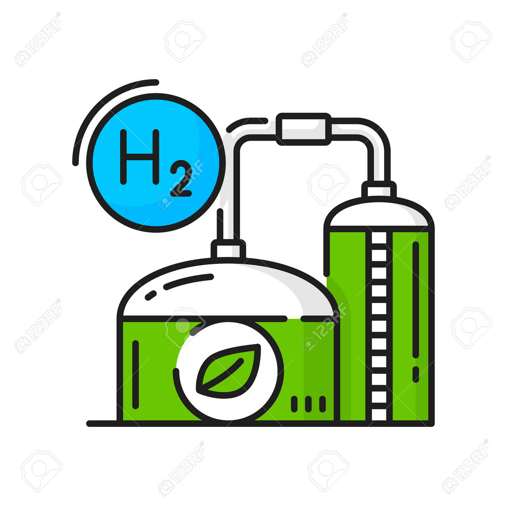
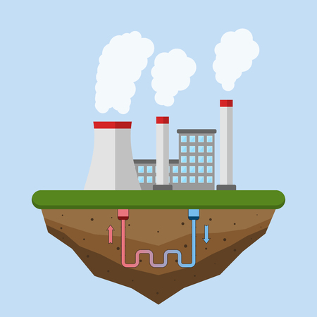

Energia Limpa e Renovável: O Futuro da Energia
Tipos de Energia Limpa
Energia solar
A energia solar é uma fonte renovável e inesgotável gerada pela luz (fotovoltaica) ou calor (térmica) do sol. Através de painéis fotovoltaicos, converte a radiação em eletricidade, reduzindo a conta de lA energia eólica é uma fonte renovável e limpa gerada pela força dos ventos, utilizando aerogeradores para converter energia cinética em eletricidade. Com baixo impacto ambiental, é a segunda maior fonte de geração no Brasil, concentrada no Nordeste, destacando-se como inesgotável e crucial para a transição energética.

Energia Eólica
energia eólica é uma fonte renovável e limpa gerada pela força dos ventos, utilizando aerogeradores para converter energia cinética em eletricidade. Com baixo impacto ambiental, é a segunda maior fonte de geração no Brasil, concentrada no Nordeste, destacando-se como inesgotável e crucial para a transição energética.
Energia hidrelétrica
A energia hidrelétrica é uma fonte renovável e limpa, gerada pela força da água em movimento (energia cinética) em rios, que aciona turbinas e geradores em usinas. No Brasil, representa a principal fonte de eletricidade, correspondendo a mais de 60% da matriz energética, com destaque para a usina de Itaipu, uma das maiores do mundo. O processo converte energia potencial em elétrica com alto rendimento, geralmente superior a 90%.

Biomassa
Biomassa é toda matéria orgânica de origem vegetal ou animal utilizada como fonte de energia renovável. Ela transforma resíduos como bagaço de cana, madeira, cascas agrícolas e lixo orgânico em calor, eletricidade ou combustíveis (etanol, biodiesel, biogás). É uma alternativa sustentável que substitui combustíveis fósseis.
hidrogênio verde
O hidrogênio verde é obtido pela eletrólise da água usando energia renovável (solar/eólica), separando hidrogênio e oxigênio sem emitir poluentes. É uma alternativa limpa aos combustíveis fósseis, com o Brasil posicionando-se como potencial líder global devido ao alto potencial de energias limpas e projetos no Nordeste.

geotérmica
A energia geotérmica é uma fonte renovável e limpa, derivada do calor interno da Terra, armazenado em rochas, solos e água subterrânea. Ela é captada por perfurações para gerar eletricidade (em usinas) ou para aquecimento direto, sendo constante e independente de condições climáticas.
